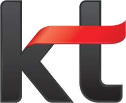

01
모바일
Mobile Solution
최신 스마트폰 개통부터 요금제 설계, 기기변경·번호이동까지.
고객의 사용 패턴에 꼭 맞는 모바일 생활을 제안합니다.
- 5G · LTE 개통
- 요금제 컨설팅
- 기기변경 · 번호이동

공식대리점KT Official Partner
KT Partnership
에이플러스는 KT와 직접 계약을 맺고 대리점 코드를 부여받은 공식 파트너입니다. KT 서부지사 소매 대리점 1위로서, KT의 서비스가 고객에게 닿는 현장을 가장 가까이에서 책임지고 있습니다.
About Us
에이플러스는 KT로부터 정식 대리점 코드를 부여받아 운영하는 KT 공식대리점입니다. 2013년 충북 증평에서 시작해, 지금은 12개 거점을 운영하며 충북·충남·대전·세종·전북·전남·제주를 아우르는 KT 서부지사 1등 소매 대리점으로 성장했습니다.
복잡한 요금제와 약정 속에서 고객이 손해 보지 않도록, 가장 쉬운 말로 가장 정확하게 안내합니다.
규모보다 신뢰로 1등을 지킵니다. 고객이 먼저 찾고, 구성원이 자랑스러워하는 대리점이 되겠습니다.
집 가까운 매장에서 시작해 개통 이후까지. 에이플러스가 고객 곁에 머무는 방식입니다.
휴대폰 매장은 모두 같아 보이지만, 통신사와의 계약 관계에 따라 역할과 책임이 다릅니다.
통신사(KT)와 직접 계약을 맺고 대리점 코드를 부여받아, 가입·개통 업무를 직접 처리하는 매장입니다.
통신사가 아닌 대리점과 계약을 맺고, 대리점을 통해 가입을 접수하는 매장입니다.
Business
모바일
최신 스마트폰 개통부터 요금제 설계, 기기변경·번호이동까지.
고객의 사용 패턴에 꼭 맞는 모바일 생활을 제안합니다.
홈상품
인터넷과 지니 TV, 그리고 가족 결합까지.
집 안의 모든 연결을 한 번의 상담으로 완성합니다.
사업자 · 소상공인
사업자와 소상공인을 위한 매장 맞춤 솔루션.
주문부터 보안, 인터넷까지 가게 운영에 필요한 연결을 한 번에 준비합니다.
지금 내는 요금과 사용 패턴을 먼저 확인합니다.
요금제·결합·단말기를 비교해 가장 유리한 조합을 제안합니다.
개통과 데이터 이전, 초기 설정까지 매장에서 한 번에 마칩니다.
요금 점검과 변경 상담을 가까운 매장에서 계속 이어갑니다.
Our Promise
KT와 직접 계약한 공식대리점으로서, 가입부터 변경·해지 안내까지 책임 있게 처리합니다.
사용 패턴을 먼저 듣습니다. 쓰지 않을 요금제와 부가서비스는 권하지 않습니다.
약정 기간, 할인 조건, 위약금까지. 가입 전에 빠짐없이 설명해 드립니다.
12개 거점 어디를 방문하셔도 같은 기준의 상담과 서비스를 받으실 수 있습니다.
Sustained Growth
에이플러스는 충청권과 호남권, 제주를 관할하는 KT 서부지사에서 가장 앞선 소매 대리점으로 자리 잡았습니다.
KT 서부지사 소매 대리점
No.1
운영 거점 (사무실 포함)
12개
서부지사 관할 시·도
7개
설립
2013년
충북 증평에서 에이플러스 설립
통신판매업 신고
12개 거점 운영 · KT 서부지사 소매 대리점 1위
Locations
Careers
고객 앞에서 정직하고, 동료 곁에서 든든한 분을 기다립니다.
에이플러스와 함께 성장할 여정에 함께해 주세요.
고객 앞에서도, 동료 앞에서도 꾸미지 않습니다. 잘못된 일일수록 먼저, 있는 그대로 공유합니다.
맡은 일은 끝까지 해냅니다. 내 매장, 내 업무의 주인으로서 결과를 책임지고, 동료가 믿고 맡길 수 있는 사람이 됩니다.
어제보다 나은 오늘을 만듭니다. 배운 것은 나누고, 회사의 성장을 나의 성장으로 연결합니다.
어느 매장에서 누가 응대하더라도 같은 품질을 냅니다. 개인기가 아니라 기준으로 일합니다.
결과만큼 과정을 봅니다. 숫자는 정확하게 기록하고, 문제는 숨기지 않고 바로 꺼냅니다.
한 매장의 노하우는 12개 거점 모두의 것입니다. 잘되는 방법은 빠르게 나눕니다.
선배는 후배의 성장을 책임지고, 후배는 다음 사람의 선배가 됩니다.
고객 상담, 요금제·단말기 제안, 개통 및 사후관리
매장 운영 총괄, 실적·재고 관리, 구성원 교육
개통 서류 및 정산 관리, 매장 운영 지원
FAQ
대리점은 통신사(KT)와 직접 계약을 맺고 가입·개통 업무를 직접 처리하는 매장이고, 판매점은 대리점과 계약해 가입을 접수하는 매장입니다. 에이플러스는 KT로부터 대리점 코드를 부여받은 공식대리점입니다.
네. 지금 쓰시는 요금과 남은 약정을 함께 확인한 뒤, 번호이동이 유리한지부터 솔직하게 안내해 드립니다.
본인 확인을 위한 신분증이 필요합니다. 가입 유형에 따라 추가 서류가 필요할 수 있으니, 방문 전 매장이나 대표전화로 문의해 주시면 정확히 안내해 드립니다.
네. 12개 거점이 같은 기준으로 운영되므로 가까운 에이플러스 매장 어디서나 상담받으실 수 있습니다.
대표전화 043-838-0125로 문의해 주시면 모집 중인 매장과 지원 방법을 안내해 드립니다.
Contact